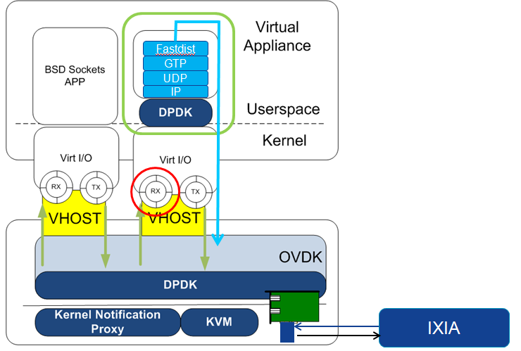

Controller Cloud phase2 introduction
Table of Contents
Phase2
Le Dec 24th 2014 Launch the vRNC on openstack platform.
- Porting TP to DPM.
- Verify the performance
- Tunning the performance
- Porting Dmxmsg to userspace application with DPDK
- Porting Dmxmsg to IP based DPDK
- Merge TPUP together on same VM.
- Add LBPU for loadbalance
- Combine TPUP into the same process.
Testing environment
Arch
Host:
OS:CentOS6.5 CPU:model name : Intel(R) Xeon(R) CPU E5-2680 v2 @ 2.80GHz(Ivy Bridge) memory:DDR3 1600, 128G OVDK version:1.1 DPDK version:1.7.0
Guest:
OS:WR4.3 CPU:model name : Intel Xeon E312xx (Sandy Bridge) cpu MHz : 2792.734 memory: 4G DPDK:1.7.0
Full path testing arch. to simulate UP, we deploy a L2FWD example on USPU, this example just switch the mac address in the packet and send it back to EIPU.Traffic path is IXIA–>OVDK–>EIPU–>OVDK–>USPU–>OVDK–>EIPU–>OVDK–>IXIA
Performance tunning status update
Host level
| Case | result |
|---|---|
| L2FWD on host | 13Mpps |
| OVDK fwd | 7.8Mpps |
Guest level
- single core without DPM deployed
- Host level with bridge, guest os driver with virtio
Case result L2FWD 250Kpps EITP 50Kpps
- Host level with OVDK, guest os driver with virtio
Case result L2FWD 400K
- Host level with OVDK, guest os driver with IVSHEM
Case result L2FWD 6.8M
- Host level with OVDK, guest os driver with virtio+vhost
- Standalone environemnt testing
Case result L2FWD 8Mpps EITP 1.623Mpps IXIA–>OVDK–>EIPU–>OVDK–>IXIA
 Open issue
- With the OVDK+vHost, there is continously packet lost, even with very
low packet rate. We are trying to get help from Intel about this issue.
- Fullpath testing
IXIA–>OVDK–>L2FWD–>OVDK–>L2FWD–>OVDK–>L2FWD–>IXIAWe got 3.6M PPS with this traffic path. This can be a bench mark for our EITP full path traffic testing.
IXIA–>OVDK–>EIPU–>OVDK–>L2FWD–>OVDK–>EIPU–>IXIA
- With rx 64 packet batch, tx no batch, we got 700KPPS
loop count packet num idle count packet per loop ave cycle 111838 7157600 0 63.999714 1955.9629 110204 7053056 0 64 1984.9552 110618 7079544 0 63.999928 1977.5285 111048 7107072 0 64 1969.8689 111322 7124588 0 63.999820 1965.0259 112908 7226112 0 64 1937.4181 113304 7251456 0 64 1930.6468 113326 7252864 0 64 1930.2720 113620 7271680 0 64 1925.2772 114168 7306752 0 64 1916.0360 114140 7304924 0 63.999685 1916.5155 113900 7289600 0 64 1920.5443 113862 7287136 0 63.999719 1921.1937 102740 6575360 0 64 2129.1610 113842 7285888 0 64 1921.5228 114100 7302400 0 64 1917.1779 108832 6965248 0 64 2009.9787 112168 7178752 0 64 1950.1997 [root@EIPU-0(KVMCluster) /root] # gprof /root/ileitp Flat profile: Each sample counts as 0.01 seconds. % cumulative self self total time seconds seconds calls s/call s/call name 30.38 75.71 75.71 virtio_xmit_pkts 20.10 125.79 50.08 virtio_recv_pkts 15.10 163.42 37.63 1 37.63 62.72 main_loop 10.50 189.59 26.17 240330600 0.00 0.00 eitp_udp_output 3.60 198.57 8.98 480661843 0.00 0.00 rt_lookup 2.31 204.33 5.77 fastdist_send 1.59 208.29 3.96 240330601 0.00 0.00 arp_get_entry 1.20 211.29 3.00 240331243 0.00 0.00 gtp_dl_handler 1.20 214.27 2.98 240331243 0.00 0.00 eitp_udp_input 0.95 216.64 2.37 240330600 0.00 0.00 gtp_ul_handler 0.90 218.87 2.24 480661844 0.00 0.00 ether_output 0.88 221.08 2.21 fastdist_process_fastdist_packet 0.72 222.88 1.80 240330600 0.00 0.00 rte_pktmbuf_free 0.72 224.66 1.79 240331243 0.00 0.00 tf_find_by_gtp_tpi 0.62 226.21 1.55 dmxmsg_se_translate_addr 0.58 227.66 1.45 240331243 0.00 0.00 udp_ip2grp 0.53 228.98 1.33 240331243 0.00 0.00 ip_input 0.51 230.24 1.26 240331243 0.00 0.00 __gtpu_dl_active_rab_handler 0.48 231.43 1.19 1481887740 0.00 0.00 ping_send_packets 0.47 232.61 1.18 240331243 0.00 0.00 eitp_udp_dispatch 0.47 233.78 1.17 720993086 0.00 0.00 gtp_get_payload_len 0.42 234.81 1.04 240331243 0.00 0.00 tae_dl_handler 0.40 235.81 1.00 virtio_dev_cq_start 0.33 236.63 0.82 240330600 0.00 0.00 tae_flow_handler 0.33 237.44 0.81 480661843 0.00 0.00 get_gtptable_by_logaddr 0.30 238.18 0.75 240331243 0.00 0.00 gtp_check_head
- With tx 32 packet batch, rx 64 packet batch mode
- 64bytes
830KPPSloop count packet num idle count packet per loop ave cycle 130090 8325660 0 63.999231 1681.5484 131244 8399072 7 63.995855 1666.8508 130896 8377344 0 64 1671.1741 130582 8357248 0 64 1675.1926 131026 8385664 0 64 1669.5160 131114 8391296 0 64 1668.3954 131414 8410432 0 63.999513 1664.5994 131014 8384352 7 63.995848 1669.7772 131844 8437984 0 63.999757 1659.1641 131578 8420992 0 64 1662.5120
- 128bytes
830KPPSloop count packet num idle count packet per loop ave cycle 130670 8362784 0 63.999265 1674.0837 132472 8478208 0 64 1651.2923 131788 8434400 0 63.999757 1659.8691 132560 8483360 6 63.996379 1650.2895 132684 8491776 0 64 1648.6539 132048 8451072 0 64 1656.5946 130246 8335744 0 64 1679.5142 131838 8437632 0 64 1659.2333 132384 8472448 0 63.999033 1652.4150 132672 8490464 7 63.995900 1648.9087 132484 8478912 0 63.999517 1651.1552 131328 8404992 64 1665.6768
- 256bytes
830KPPSloop count packet num idle count packet per loop ave cycle 130710 8365344 0 63.999266 1673.5713 132008 8447968 7 63.995879 1657.2032 129778 8305696 0 63.999260 1685.5902 132680 8491520 0 64 1648.7036 133664 8554464 0 63.999761 1636.5724 132294 8466816 0 64 1653.5141 132466 8477824 0 64 1651.3671 132586 8485024 6 63.996380 1649.9659 133456 8541088 0 63.999281 1639.1354
- 512 bytes
880KPPSloop count packet num idle count packet per loop ave cycle 133604 8543744 85 63.948265 1638.6259 133404 8537760 0 63.999280 1639.7744 133718 8557952 0 64 1635.9054 136116 8711360 0 63.999530 1607.0969 136410 8729728 7 63.996247 1603.7155 136320 8724352 0 63.999061 1604.7037 134512 8608768 0 64 1626.2490 137198 8780576 0 63.999300 1594.4284 136780 8753920 0 64 1599.2835 136888 8760764 0 63.999503 1598.0341
- 1024 bytes
890KPPSloop count packet num idle count packet per loop ave cycle 140042 8962596 1 63.999343 1562.0474 138862 8887168 0 64 1575.3050 139214 8909600 1 63.999310 1571.3388 138706 8876732 6 63.996741 1577.1570 136940 8764128 0 63.999766 1597.4208 136512 8736768 0 64 1602.4232 139288 8914336 0 63.999311 1570.5040
- 1480 bytes
833KPPSloop count packet num idle count packet per loop ave cycle 57924624 6171848 57683024 0.10654964 2268.3644 3852186 8200836 3544077 2.1288785 1707.1430 1445606 8250712 1195100 5.7074417 1696.8233 1749604 8334312 1479128 4.7635419 1679.8027 1806370 8334280 1532734 4.6138277 1679.8092 2069146 8334328 1787960 4.0279072 1679.7995 764820 8330336 547375 10.891891 1680.6045 1013146 8334044 774506 8.2259062 1679.8567 892034 8327157 666086 9.3350220 1681.2461 1314640 8334359 1058553 6.3396512 1679.7933 1756018 8327504 1484794 4.7422657 1681.1760 1977452 8334352 1698417 4.2146924 1679.7947 2392334 8334328 2098858 3.4837644 1679.7995 RAW data
The maximum pps for full path is about 550k pps. (two directions) with core isolation on host and guest, we get 770k pps through IXIA-->EIPU-->USPU-->EIPU-->IXIA [root@CFPU-0(KVMCluster) /root/traffic] # tail -f /srv/Log/log/syslog | grep ileitp Aug 19 07:26:59.768651 info EIPU-0 ileitp[6167]: main_loop: loop_count : 219106, packet_num : 5994240, idle_count : 31698 Aug 19 07:27:04.764619 info EIPU-0 ileitp[6167]: main_loop: loop_count : 212730, packet_num : 5914996, idle_count : 27789 Aug 19 07:27:09.760298 info EIPU-0 ileitp[6167]: main_loop: loop_count : 200364, packet_num : 5943572, idle_count : 14539 Aug 19 07:27:14.756543 info EIPU-0 ileitp[6167]: main_loop: loop_count : 206656, packet_num : 5901296, idle_count : 22147 Aug 19 07:27:19.753429 info EIPU-0 ileitp[6167]: main_loop: loop_count : 202098, packet_num : 5971240, idle_count : 15418 Aug 19 07:27:24.750449 info EIPU-0 ileitp[6167]: main_loop: loop_count : 212290, packet_num : 5928540, idle_count : 26934 Aug 19 07:27:29.747507 info EIPU-0 ileitp[6167]: main_loop: loop_count : 207686, packet_num : 5964800, idle_count : 21203 Aug 19 07:27:34.744598 info EIPU-0 ileitp[6167]: main_loop: loop_count : 217836, packet_num : 5956252, idle_count : 31605 Aug 19 07:27:39.742273 info EIPU-0 ileitp[6167]: main_loop: loop_count : 211610, packet_num : 5984444, idle_count : 24476 Aug 19 07:27:44.740477 info EIPU-0 ileitp[6167]: main_loop: loop_count : 212322, packet_num : 5996132, idle_count : 24844 | packet number | loop count | idle count | packet per loop | ave cycle per packet | |---------------+------------+------------+-----------------+----------------------| | 5994240 | 219106 | 31698 | 31.984974 | 2335.5755 | | 5914996 | 212730 | 27789 | 31.983151 | 2366.8655 | | 5943572 | 200364 | 14539 | 31.984781 | 2355.4859 | | 5901296 | 206656 | 22147 | 31.983784 | 2372.3602 | | 5971240 | 202098 | 15418 | 31.986501 | 2344.5716 | | 5928540 | 212290 | 26934 | 31.984613 | 2361.4583 | | 5964800 | 207686 | 21203 | 31.985757 | 2347.1030 | | 5956252 | 217836 | 31605 | 31.983139 | 2350.4714 | | 5984444 | 211610 | 24476 | 31.979459 | 2339.3986 | | 5996132 | 212322 | 24844 | 31.983123 | 2334.8386 | #+TBLFM: $4=$1/($2-$3)::$5=5*2800000000/($2-$3)/$4 # gprof /root/ileitp Flat profile: Each sample counts as 0.01 seconds. % cumulative self self total time seconds seconds calls s/call s/call name 28.39 42.50 42.50 virtio_recv_pkts 21.86 75.23 32.73 1 32.73 54.20 main_loop 14.58 97.05 21.82 virtio_xmit_pkts 4.79 104.23 7.18 286098880 0.00 0.00 rt_lookup 4.00 110.22 5.99 125354396 0.00 0.00 eitp_udp_output 2.99 114.69 4.48 fastdist_send 1.62 117.11 2.42 160744484 0.00 0.00 gtp_dl_handler 1.60 119.51 2.40 125354398 0.00 0.00 arp_get_entry 1.50 121.76 2.25 286098881 0.00 0.00 ether_output 1.42 123.89 2.13 160744484 0.00 0.00 eitp_udp_input 1.26 125.78 1.89 125354396 0.00 0.00 gtp_ul_handler 0.97 127.23 1.45 160744484 0.00 0.00 tf_find_by_gtp_tpi 0.94 128.63 1.40 125354396 0.00 0.00 rte_pktmbuf_free 0.92 130.01 1.38 fastdist_process_fastdist_packet 0.88 131.33 1.32 160744484 0.00 0.00 __gtpu_dl_active_rab_handler 0.86 132.62 1.29 446843364 0.00 0.00 gtp_get_payload_len 0.84 133.87 1.25 160744484 0.00 0.00 udp_ip2grp 0.75 134.99 1.12 dmxmsg_se_translate_addr 0.75 136.11 1.12 160744484 0.00 0.00 ip_input 0.69 137.14 1.04 1104611487 0.00 0.00 ping_send_packets 0.54 137.95 0.81 160744484 0.00 0.00 tae_dl_handler 0.53 138.74 0.79 virtio_dev_cq_start 0.51 139.51 0.77 160744484 0.00 0.00 eitp_udp_dispatch 0.44 140.17 0.66 125354396 0.00 0.00 tae_flow_handler 0.43 140.81 0.65 160744484 0.00 0.00 gtp_check_head 0.35 141.34 0.53 160744484 0.00 0.00 gtp_ext_hdr_parse syslog:Aug 21 08:35:57.294030 info EIPU-0 ileitp[6147]: main_loop: loop_count : 111838, packet_num : 7157600, idle_count : 0 syslog:Aug 21 08:36:02.298067 info EIPU-0 ileitp[6147]: main_loop: loop_count : 110204, packet_num : 7053056, idle_count : 0 syslog:Aug 21 08:36:07.301972 info EIPU-0 ileitp[6147]: main_loop: loop_count : 110618, packet_num : 7079544, idle_count : 0 syslog:Aug 21 08:36:12.305994 info EIPU-0 ileitp[6147]: main_loop: loop_count : 111048, packet_num : 7107072, idle_count : 0 syslog:Aug 21 08:36:17.311753 info EIPU-0 ileitp[6147]: main_loop: loop_count : 111322, packet_num : 7124588, idle_count : 0 syslog:Aug 21 08:36:22.317193 info EIPU-0 ileitp[6147]: main_loop: loop_count : 112908, packet_num : 7226112, idle_count : 0 syslog:Aug 21 08:36:27.322578 info EIPU-0 ileitp[6147]: main_loop: loop_count : 113304, packet_num : 7251456, idle_count : 0 syslog:Aug 21 08:36:32.327473 info EIPU-0 ileitp[6147]: main_loop: loop_count : 113326, packet_num : 7252864, idle_count : 0 syslog:Aug 21 08:36:37.330015 info EIPU-0 ileitp[6147]: main_loop: loop_count : 113620, packet_num : 7271680, idle_count : 0 syslog:Aug 21 08:36:42.332537 info EIPU-0 ileitp[6147]: main_loop: loop_count : 114168, packet_num : 7306752, idle_count : 0 syslog:Aug 21 08:36:47.335000 info EIPU-0 ileitp[6147]: main_loop: loop_count : 114140, packet_num : 7304924, idle_count : 0 syslog:Aug 21 08:36:52.337157 info EIPU-0 ileitp[6147]: main_loop: loop_count : 113900, packet_num : 7289600, idle_count : 0 syslog:Aug 21 08:36:57.339252 info EIPU-0 ileitp[6147]: main_loop: loop_count : 113862, packet_num : 7287136, idle_count : 0 syslog:Aug 21 08:37:02.341213 info EIPU-0 ileitp[6147]: main_loop: loop_count : 102740, packet_num : 6575360, idle_count : 0 # [root@EIPU-0(KVMCluster) /root] # gprof /root/ileitp Flat profile: Each sample counts as 0.01 seconds. % cumulative self self total time seconds seconds calls s/call s/call name 30.38 75.71 75.71 virtio_xmit_pkts 20.10 125.79 50.08 virtio_recv_pkts 15.10 163.42 37.63 1 37.63 62.72 main_loop 10.50 189.59 26.17 240330600 0.00 0.00 eitp_udp_output 3.60 198.57 8.98 480661843 0.00 0.00 rt_lookup 2.31 204.33 5.77 fastdist_send 1.59 208.29 3.96 240330601 0.00 0.00 arp_get_entry 1.20 211.29 3.00 240331243 0.00 0.00 gtp_dl_handler 1.20 214.27 2.98 240331243 0.00 0.00 eitp_udp_input 0.95 216.64 2.37 240330600 0.00 0.00 gtp_ul_handler 0.90 218.87 2.24 480661844 0.00 0.00 ether_output 0.88 221.08 2.21 fastdist_process_fastdist_packet 0.72 222.88 1.80 240330600 0.00 0.00 rte_pktmbuf_free 0.72 224.66 1.79 240331243 0.00 0.00 tf_find_by_gtp_tpi 0.62 226.21 1.55 dmxmsg_se_translate_addr 0.58 227.66 1.45 240331243 0.00 0.00 udp_ip2grp 0.53 228.98 1.33 240331243 0.00 0.00 ip_input 0.51 230.24 1.26 240331243 0.00 0.00 __gtpu_dl_active_rab_handler 0.48 231.43 1.19 1481887740 0.00 0.00 ping_send_packets 0.47 232.61 1.18 240331243 0.00 0.00 eitp_udp_dispatch 0.47 233.78 1.17 720993086 0.00 0.00 gtp_get_payload_len 0.42 234.81 1.04 240331243 0.00 0.00 tae_dl_handler 0.40 235.81 1.00 virtio_dev_cq_start 0.33 236.63 0.82 240330600 0.00 0.00 tae_flow_handler 0.33 237.44 0.81 480661843 0.00 0.00 get_gtptable_by_logaddr 0.30 238.18 0.75 240331243 0.00 0.00 gtp_check_head
- 64bytes
- With rx 64 packet batch, tx no batch, we got 700KPPS
- Standalone environemnt testing
- Host level with bridge, guest os driver with virtio
- One core classification three core processing with DPM deployed
- Host level with OVDK, guest os driver with virtio+host
- The tx and rx are handled on the same core, 300KPPS
loop count packet num idle count packet per loop ave cycle 46676 2987264 0 64 4686.5627 47504 3040256 0 64 4604.8754 46792 2994528 1 63.996581 4675.1942 46994 3007584 0 63.999319 4654.8991 46488 2975232 0 64 4705.5154 - Tx and Rx are handled on different core, 350PPS
loop count packet num idle count packet per loop ave cycle 54176 3464832 19 63.955109 4040.5999 54056 3459264 3 63.994080 4047.1037 54326 3474656 17 63.959356 4029.1758 54416 3479324 31 63.939356 4023.7701 54068 3458528 16 63.966265 4047.9649 53958 3451744 12 63.970940 4055.9207 54186 3465952 15 63.963976 4039.2943 54150 3463424 16 63.959815 4042.2426 53986 3453152 14 63.963842 4054.2669 53940 3449244 24 63.945940 4058.8604 54122 3462976 7 63.984627 4042.7655 1. The classification and sending packets to external interface are in one core. 300K pps can be reached. 12 flows are created. Aug 25 05:59:52.142928 info EIPU-0 ileitp[6176]: main_loop: loop_count : 46676, packet_num : 2987264, idle_count : 0 Aug 25 05:59:57.146296 info EIPU-0 ileitp[6176]: main_loop: loop_count : 47504, packet_num : 3040256, idle_count : 0 Aug 25 06:00:02.149796 info EIPU-0 ileitp[6176]: main_loop: loop_count : 46792, packet_num : 2994528, idle_count : 1 Aug 25 06:00:07.153325 info EIPU-0 ileitp[6176]: main_loop: loop_count : 46994, packet_num : 3007584, idle_count : 0 Aug 25 06:00:12.156811 info EIPU-0 ileitp[6176]: main_loop: loop_count : 46488, packet_num : 2975232, idle_count : 0 # gprof /root/ileitp Flat profile: Each sample counts as 0.01 seconds. % cumulative self self total time seconds seconds calls s/call s/call name 69.98 487.10 487.10 3 162.37 176.80 dpm_evm_dispatcher_loop 6.13 529.78 42.68 main 4.67 562.26 32.48 virtio_recv_pkts 3.87 589.22 26.96 66750869 0.00 0.00 dpm_evm_send_data 3.65 614.65 25.43 dpm_free 3.09 636.15 21.50 dpm_alloc_mem 1.28 645.05 8.90 1058579697 0.00 0.00 dpm_evm_dispatcher 1.02 652.17 7.12 virtio_xmit_pkts 0.86 658.16 6.00 15709432 0.00 0.00 arp_get_entry 0.81 663.77 5.61 26690001 0.00 0.00 rt_lookup 0.72 668.76 5.00 19943864 0.00 0.00 eitp_udp_output 0.61 672.98 4.22 66826257 0.00 0.00 dpm_evm_receive_data 0.36 675.46 2.48 20372050 0.00 0.00 fastdist_send 0.17 676.64 1.18 virtio_dev_cq_start 0.17 677.80 1.16 11618193 0.00 0.00 eitp_udp_input 0.17 678.96 1.16 13016917 0.00 0.00 fastdist_process_fastdist_packet 0.15 680.02 1.07 2016730 0.00 0.00 p_gtp_main 0.15 681.07 1.05 19766981 0.00 0.00 gtp_ul_handler 0.13 681.95 0.89 13055972 0.00 0.00 p_egress_pkt_out_main 0.11 682.75 0.80 11291212 0.00 0.00 gtp_dl_evm_dispatch 0.11 683.52 0.78 14872514 0.00 0.00 rte_pktmbuf_free EAL: WARNING: cpu flags constant_tsc=yes nonstop_tsc=no -> using unreliable clock cycles ! EAL: Master core 0 is ready (tid=c2aa1820) DL-TEID Status RAB-STATE Local IP Remote IP UL-TEID VRF-ID Downlink Uplink Relocation Buffered ---------- ------ ---------- --------------- --------------- ---------- ------ --------- --------- ---------- -------- 0xBED00001 WORK Active 192.168.220.123 192.168.220.100 0x8 0 0/2353648 8/2353369 0/0 0 0xBED00002 WORK Active 192.168.220.123 192.168.220.100 0x8 0 0/2353653 10/2353373 0/0 0 0xBED00003 WORK Active 192.168.220.123 192.168.220.100 0x8 0 0/2353498 16/2353215 0/0 0 0xBED00004 WORK Active 192.168.220.123 192.168.220.100 0x8 0 0/2353689 12/2353395 0/0 0 0xBED00005 WORK Active 192.168.220.123 192.168.220.100 0x8 0 0/2353597 7/2353321 0/0 0 0xBED00006 WORK Active 192.168.220.123 192.168.220.100 0x8 0 0/2353345 10/2353067 0/0 0 0xBED00007 WORK Active 192.168.220.123 192.168.220.100 0x8 0 0/2353291 15/2353010 0/0 0 0xBED00008 WORK Active 192.168.220.123 192.168.220.100 0x8 0 0/2353104 12/2352812 0/0 0 0xBED00009 WORK Active 192.168.220.123 192.168.220.100 0x8 0 0/2353089 6/2352808 0/0 0 0xBED0000A WORK Active 192.168.220.123 192.168.220.100 0x8 0 0/2353327 11/2353043 0/0 0 0xBED0000B WORK Active 192.168.220.123 192.168.220.100 0x8 0 0/2353536 15/2353246 0/0 0 0xBED0000C WORK Active 192.168.220.123 192.168.220.100 0x8 0 0/2353543 11/2353245 0/0 0 2. The classification in the master core and the sending traffic to external interface in other cores. 350K pps can be reached. Aug 25 06:15:18.788150 info EIPU-0 ileitp[6666]: main_loop: loop_count : 54176, packet_num : 3464832, idle_count : 19 Aug 25 06:15:23.788455 info EIPU-0 ileitp[6666]: main_loop: loop_count : 54056, packet_num : 3459264, idle_count : 3 Aug 25 06:15:28.788609 info EIPU-0 ileitp[6666]: main_loop: loop_count : 54326, packet_num : 3474656, idle_count : 17 Aug 25 06:15:33.788690 info EIPU-0 ileitp[6666]: main_loop: loop_count : 54416, packet_num : 3479324, idle_count : 31 Aug 25 06:15:38.788546 info EIPU-0 ileitp[6666]: main_loop: loop_count : 54068, packet_num : 3458528, idle_count : 16 Aug 25 06:15:43.789554 info EIPU-0 ileitp[6666]: main_loop: loop_count : 53958, packet_num : 3451744, idle_count : 12 Aug 25 06:15:48.795949 info EIPU-0 ileitp[6666]: main_loop: loop_count : 54186, packet_num : 3465952, idle_count : 15 Aug 25 06:15:53.801948 info EIPU-0 ileitp[6666]: main_loop: loop_count : 54150, packet_num : 3463424, idle_count : 16 Aug 25 06:15:58.807563 info EIPU-0 ileitp[6666]: main_loop: loop_count : 53986, packet_num : 3453152, idle_count : 14 Aug 25 06:16:03.815456 info EIPU-0 ileitp[6666]: main_loop: loop_count : 53940, packet_num : 3449244, idle_count : 24 Aug 25 06:16:08.824948 info EIPU-0 ileitp[6666]: main_loop: loop_count : 54122, packet_num : 3462976, idle_count : 7 [root@EIPU-0(KVMCluster) /root] # gprof /root/ileitp Flat profile: Each sample counts as 0.01 seconds. % cumulative self self total time seconds seconds calls s/call s/call name 60.32 321.83 321.83 3 107.28 121.54 dpm_evm_dispatcher_loop 10.26 376.57 54.74 main 8.53 422.08 45.51 virtio_recv_pkts 5.37 450.71 28.63 40807263 0.00 0.00 dpm_evm_send_data 3.70 470.44 19.73 dpm_alloc_mem 2.82 485.50 15.06 dpm_free 1.31 492.49 6.99 virtio_xmit_pkts 1.13 498.52 6.04 11405085 0.00 0.00 arp_get_entry 1.08 504.31 5.79 20763772 0.00 0.00 rt_lookup 0.97 509.48 5.17 14632480 0.00 0.00 eitp_udp_output 0.51 512.18 2.70 50739554 0.00 0.00 dpm_evm_receive_data 0.45 514.56 2.38 14406267 0.00 0.00 fastdist_send 0.27 516.00 1.44 virtio_dev_cq_start 0.22 517.18 1.18 4964665 0.00 0.00 p_gtp_main 0.21 518.28 1.10 8618036 0.00 0.00 eitp_udp_input 0.20 519.33 1.06 10125755 0.00 0.00 fastdist_process_fastdist_packet 0.17 520.23 0.90 14675927 0.00 0.00 gtp_ul_handler 0.15 521.05 0.82 9269206 0.00 0.00 rte_pktmbuf_free 0.15 521.83 0.78 8920420 0.00 0.00 gtp_dl_evm_dispatch 0.11 522.43 0.60 2550109 0.00 0.00 p_egress_pkt_out_main 0.11 523.03 0.60 8820434 0.00 0.00 gtp_dpm_dl_handle_send 0.11 523.62 0.59 21549556 0.00 0.00 ether_output 0.10 524.16 0.55 8316609 0.00 0.00 udp_ip2grp DL-TEID Status RAB-STATE Local IP Remote IP UL-TEID VRF-ID Downlink Uplink Relocation Buffered ---------- ------ ---------- --------------- --------------- ---------- ------ --------- --------- ---------- -------- 0xBED00001 WORK Active 192.168.220.123 192.168.220.100 0x8 0 0/4762589 0/4757423 0/0 0 0xBED00002 WORK Active 192.168.220.123 192.168.220.100 0x8 0 0/4762625 0/4757230 0/0 0 0xBED00003 WORK Active 192.168.220.123 192.168.220.100 0x8 0 0/4762683 0/4757397 0/0 0 0xBED00004 WORK Active 192.168.220.123 192.168.220.100 0x8 0 0/4762672 0/4757424 0/0 0 0xBED00005 WORK Active 192.168.220.123 192.168.220.100 0x8 0 0/4763096 0/4757901 0/0 0 0xBED00006 WORK Active 192.168.220.123 192.168.220.100 0x8 0 0/4763181 0/4757768 0/0 0 0xBED00007 WORK Active 192.168.220.123 192.168.220.100 0x8 0 0/4763206 0/4757933 0/0 0 0xBED00008 WORK Active 192.168.220.123 192.168.220.100 0x8 0 0/4763048 0/4757821 0/0 0 0xBED00009 WORK Active 192.168.220.123 192.168.220.100 0x8 0 0/4762498 0/4757305 0/0 0 0xBED0000A WORK Active 192.168.220.123 192.168.220.100 0x8 0 0/4762377 0/4756964 0/0 0 0xBED0000B WORK Active 192.168.220.123 192.168.220.100 0x8 0 0/4762294 0/4757053 0/0 0 0xBED0000C WORK Active 192.168.220.123 192.168.220.100 0x8 0 0/4762463 0/4757258 0/0 0
- Host level with OVDK, guest os driver with virtio+host
- Related documents
- Testing reports
http://10.159.24.136/materials/nsn_intel_workshop/Intel_vSwitch_Update_NSN_April2014.pdfhttp://10.159.24.136/materials/DPDK/inteldpdkvswitchperformancefigures0.10.0.pdf
http://10.159.24.136/materials/DPDK/DPDK_performance.pdf
http://10.159.24.136/materials/DPDK/6WIND_test_report_arch.pdf
- Testing reports
Current open issues
- To take virtio in use, virtio_net.ko and virtio_blk.ko need to be added into ramdisk file(initrd). then the two kernel module can be loaded at very early phase during kernel startup. This need to be done by FP, because the initrd file is delivered by FP package.
- In the guest OS, we are using windriver4.3, it is too old for the Ivybridge, we need to upgrade the operating system to get better performance in the guest environment. we will do some testing to see, how much benifit we would get from the upgrade.
- In the DPDK lib, only primiary process is allowed to initilize the port. we need to deploy two DPDK applications on TUPU and LBPU, one is for dmxmsg daemon, the other is for fastpath processing. the two process need to initilize different port, I have discussed this with intel guys, there might be some limitation for the interrupt handling if we deploy two process and each process initilize their own port.
- currently, the performance in our lab is far behind the report from intel. with the configuration OVDK(HOST)+vhost+virtio, for standalone l2fwd testing, traffic path is IXIA–>OVDK–>L2FWD–>OVDK–>IXIA, in our lab, we got 3.7MPPS, in intel lab, it's 7.43MPPS.
This problem is fixed, now we got 8M PPS, it's better than the report from Intel
- With single core for EITP, we got the best performance, if we split UL and DL with different core.performance is worse, the difference is 890KPPS to 530KPPS. We need more analysis for the problem